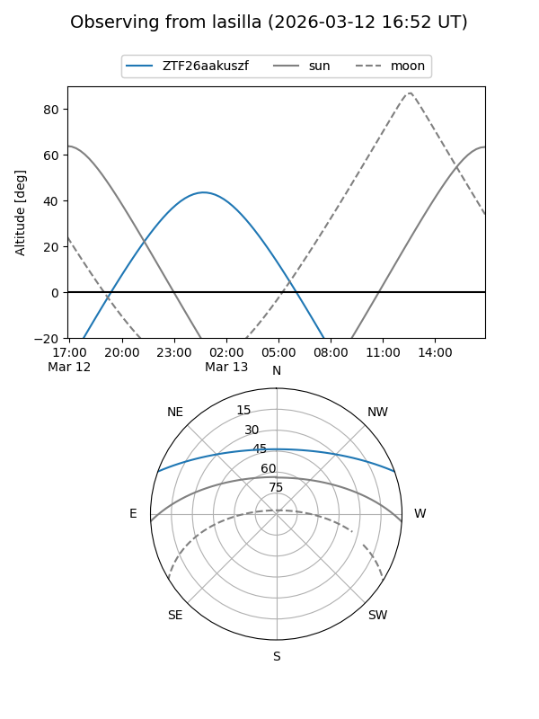
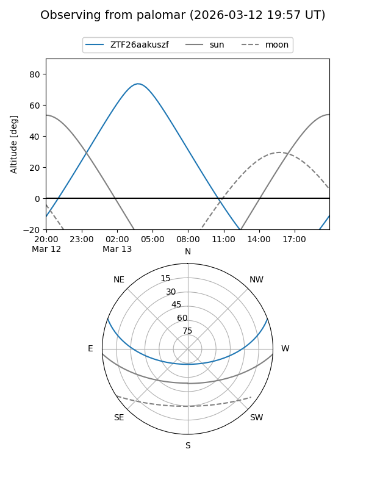

ZTF26aakuszf
Target ZTF26aakuszf at 2026-03-13 04:24
Aliases and brokers:
FINK: link
Lasair: link
ALeRCE: link
alt names
ZTF26aakuszf (ztf,fink_ztf)
Coordinates:
equatorial (ra, dec) = 110.1503,+17.20188
equatorial (HMS+DMS) = 07:20:36.07,+17:12:06.76
galactic (l, b) = (200.5553,+14.04861)
Flags:
Photometry:
last ztfg=19.17
1 ztfg detections
Lightcurve
Visibility


Additional plots